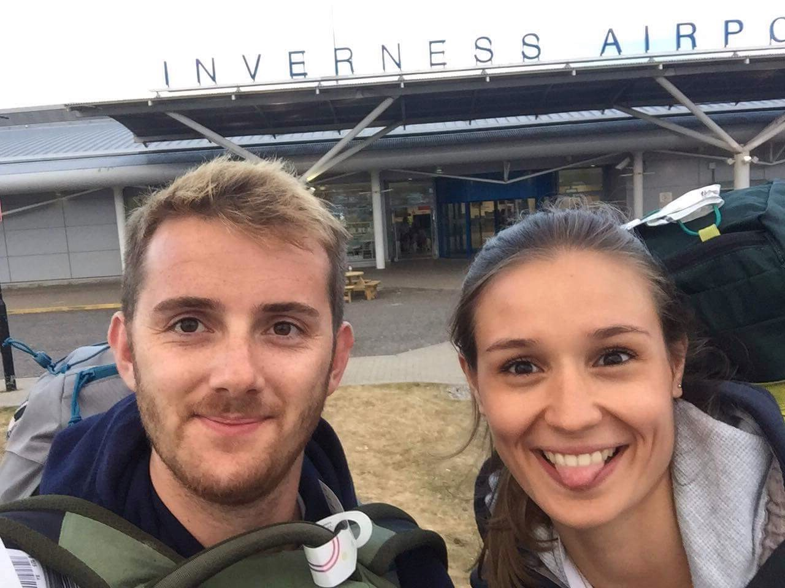
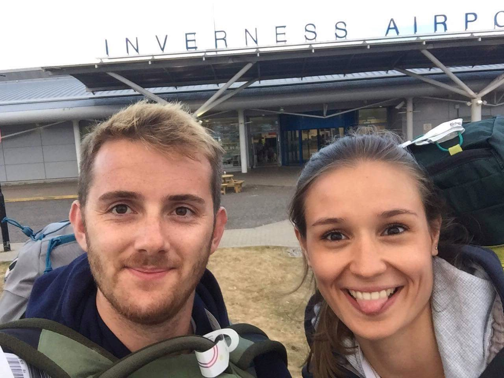
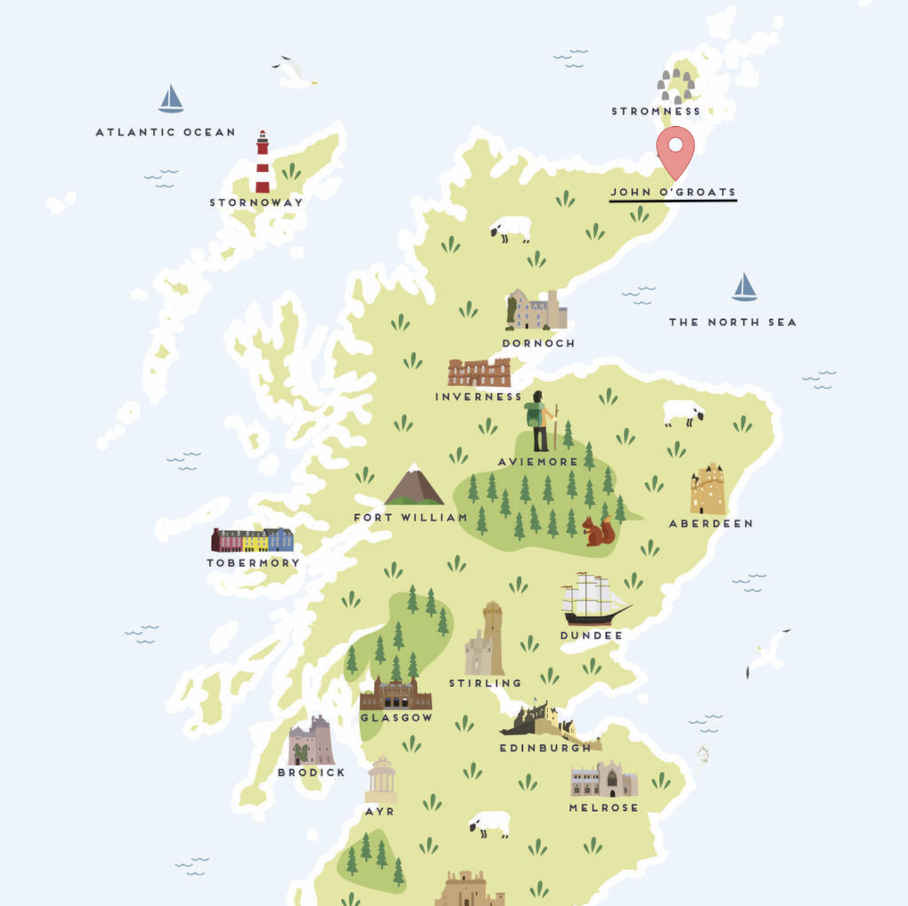

Volontariat en Écosse - partie 1
Séjour de deux mois en immersion dans les Highlands...
 

Notre arrivée chez Cara
Pour arriver jusqu'au bout de l'île qu'est la Grande Bretagne, nous avons dû organiser notre trajet ! Eh oui, la ferme de Cara se situant dans la petite ville de John O'Groats, soit plus de 1600 km au Nord de chez nous, le trajet a dû être découpé et réalisé sur deux jours. Notre premier avion a été au départ de Nantes, direction Londres pour seulement 2 heures d'arrêt pour prendre un second avion vers Inverness. Après 6 heures de voyages (depuis notre appartement à Angers), nous arrivons en terres Écossaises ! Nous sommes d'abord surpris par la taille de l'aéroport et le silence qui règne une fois les passagers de l'avion partis. Munis de nos deux sac à dos, nous attendons une navette, une petite demie-heure, qui nous emmènera dans le centre ville. Il est déjà 21h quand nous arrivons sur place, autant dire que la plupart des restaurants étaient en fin de service. Un fast-food bien connu est ouvert...en voici un premier repas "typique" chez les hommes en Kilte. Nous y rencontrons un gentil monsieur, très accueillant qui nous souhaite la bienvenue! Ils ont vraiment l'air sympas ici, des rencontres comme celle-ci font du bien, un burger aussi tient! Pour passer la nuit à Inverness, nous avons choisie une petite auberge de jeunesse non loin du château, du centre et de la gare des bus pour le lendemain. À notre arrivée, nous sommes directement reconnu : "Vous êtes français?". Notre accent nous a trahi...encore 2 mois pour le poffiner me direz-vous! Cette auberge est top au passage, niveau hygiène rien n'est à redire, l'accueil est top et le petit-déjeuner est seulement à 3£ de plus par personne. Des scones et du thé : parfait ce premier breakfast! Le lendemain matin, nous laisson nos sacs à l'auberge pour partir faire une tour dans la ville. Le ciel est dégagé, il fait même chaud en plein soleil! Les petites rues sont typiques et jolies en plein soleil. Nous faisons néanmoins rapidement le tour des rues car Inverness n'est pas une très grande ville. Dommage que nous ne puissions pas partir voir le Loch Ness (un lac connu il me semble) qui se situe à l'ouest d'Inverness, nous verrons sur notre retour! À 14h20 nous prenons le dernier bus en direction de John O'Groats à la gare routière d'Inverness. 19£ chacuns nous permettent de partir pour 3 heures de trajet en longeant la côte de la mer du Nord. Cara nous avait prévenue, les paysages sont vraiment maginfiques. La route suit le bord de mer, on aperçoit des plages, de grandes plaines vertes mais aussi des plaines plus foncées virant sur les tons violet. Je ne vous le cache pas, nous n'avons pas pu résister à faire une sieste pendant le trajet...💤 Après cela, nous arrivons enfin à destination : John O'Groats !
Que faisons nous dans sa ferme?
Tout d'abord, laissez-moi vous situer où nous sommes. John O'Groats est une petite ville de 300 habitants, située au point le plus au Nord de l'île principale du Royaume-Uni. Elle est également l'arrivée de la plus longue traversée du sud au nord de cette île : le Land's End ! De nombreux touristes arrivent donc à vélo après avoir réalisés ce trajet mythique, au coeur de cette ville du nord. L'endroit est aussi un point de passge de la route 500, route faisant le tour de l'Écosse, mais aussi pour partir visiter les îles au nord, appelées les Orkneys Islands! Nous pouvons d'ailleurs les apercevoir depuis le petit port de John O'Groats. Depuis ce port, un ferry fait régulièrement la liaison avec la ville de Kirkwall, sur les Orkneys. La ferme de Cara, alias la Puffin Croft Petting Farm, se situe donc dans la ville de JOG, à 200 mètres du port. En septembre prochain, elle fêtera ces deux ans d'installation ici! Cara a bâti une ferme composée d'animaux ainsi qu'une boutique. L'idée est de permettre à des visiteurs de venir passer un bon moment en la compagnie des animaux mais notamment d'achter des produits locaux et "Home Made". Cara propose plusieurs produits qu'elle fait elle même, allant de fruits et légumes en passant par des pâtisserie ou encore des savons et bougies faites maisons! Le principe est basé sur la confiance puisque chaque client paye en déposant les sous dans la "Honesty Box" (Boîte de l'honneteté) présente dans la boutique. On trouve l'idée top, et tout le monde a l'air de jouer le jeu. Pour aller plus en détails, le nombre des petits habitants de la ferme ne cesse d'augmenter! Deux moutons, deux agneaux, 3 ânes, une douzaine de chèvres et une dizaine de lapins de plusieurs espèces, 5 cochons, 6 canards dont 2 cannetons et pour finir une douzaine de poules de plusieurs espèces elles aussi! Et là vous pourriez vous dire, que faisons-nous ici? Pourquoi Cara aurait-elle besoin de nous? Comment nous sommes-nous retrouvez ici? Le deal est d'être hébergés en échange de services/travaux rendus. Par exemple, Cara a besoin que nous fassions plusieurs choses dans sa ferme comme tracer les lignes pour plusieurs places de parking (ce qui en plus lui permettrait d'obtenir une étoiles de plus auprès de l'organisme VisitScotland, gage de qualité de l'attraction touristique). Elle a notamment besoin de personnes pouvants gérer les animaux (la routine matinale et de soirée) lorsqu'elle vend ses produits lors d'évènements locaux et lors de marchés. Ainsi, plusieurs tâches nous sont assignées avec des objectifs à plus ou moins long termes. Nous nous occupons principalement des tâches extérieures (tondre la pelouse tous les 3 à 4 jours, arracher les mauvaises herbes, s'occuper des fruits et légumes présents dans les serres...). Cara nous demande de faire 20 heures chacuns (soit 40 heures à la semaine à deux) par semaine. Nous nous organisons de façon à nous libérer des jours de repos pour pouvoir visiter la région ou juste des après-midi. Ce qui est cool c'est qu'on peut faire comme on veut (sauf les mardis et autres exceptions) pour nous organiser. Concernant le logement : Cara nous prête une petite caravane d'environ 15m2, qui rassemble une kitchinette et d'un frigo, deux banquettes avec une table repliable. La banquette se transforme en un grand lit. Pour la douche, nous devons aller dans la salle de bain de la maison de Cara (à quelques mètres).
Nous vous ferons un prochain article pour faire un bilan sur cette expérience ici à JOG et particulièrement dans la Puffin Croft. Dans celui-ci nous vous partagerons plus de photos pour être en totale immersion avec notre quotidien !
Sinon...ce que nous voulons faire en Écosse